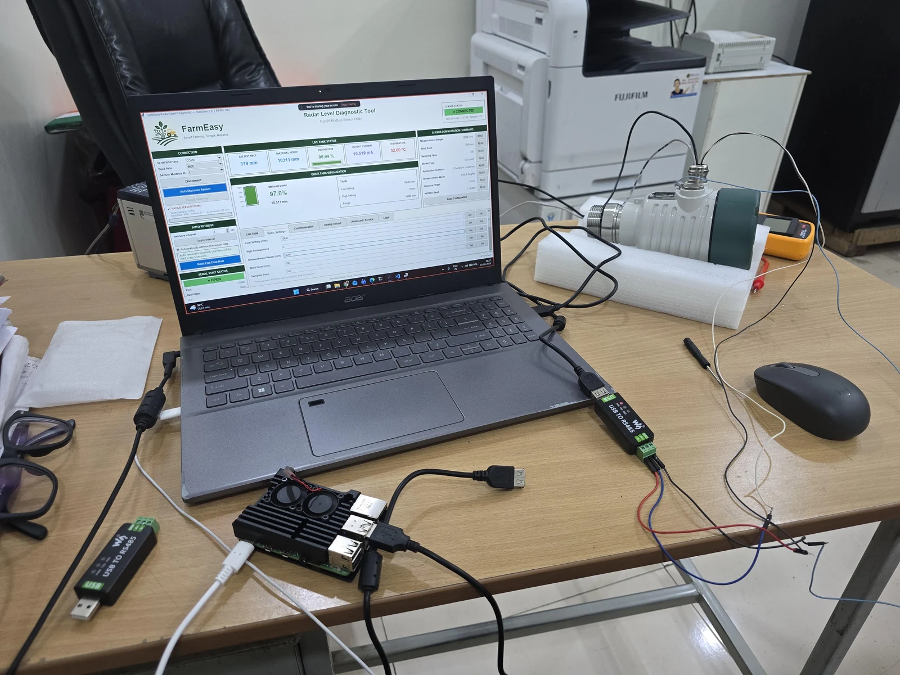
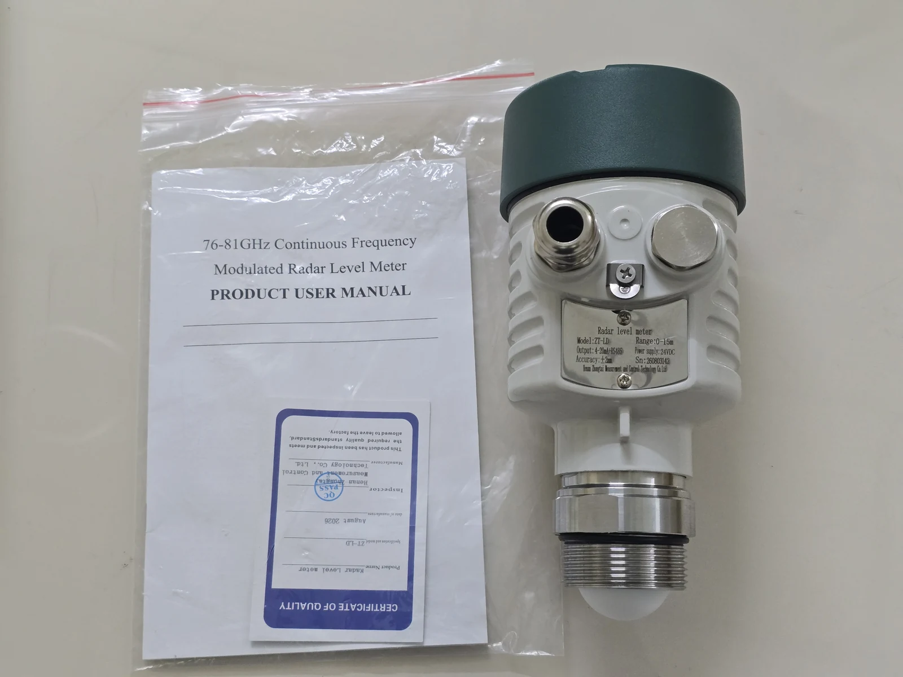
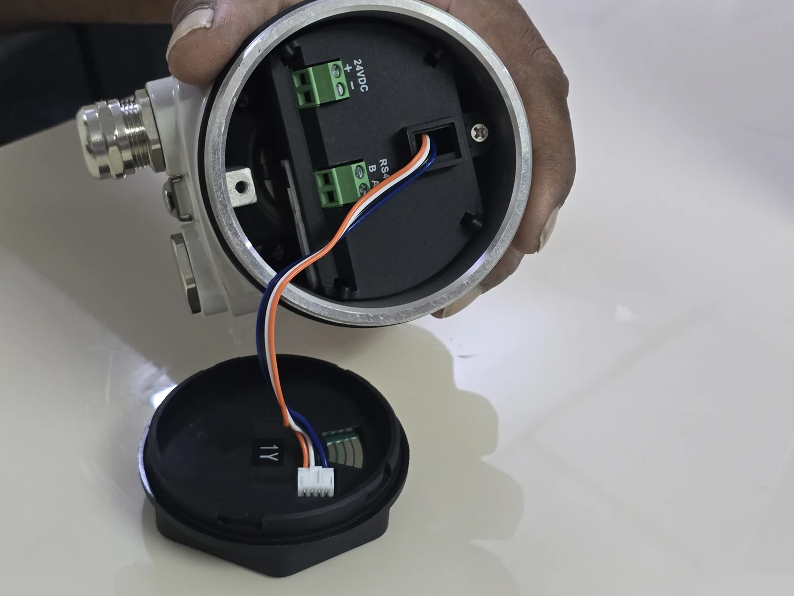
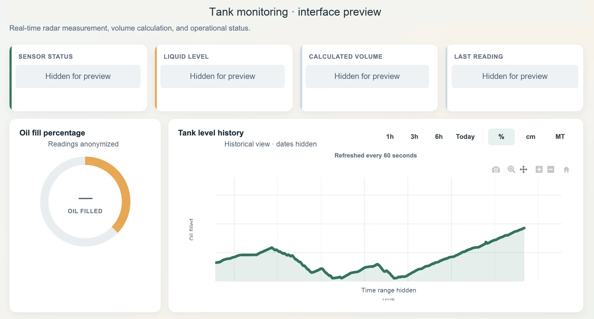
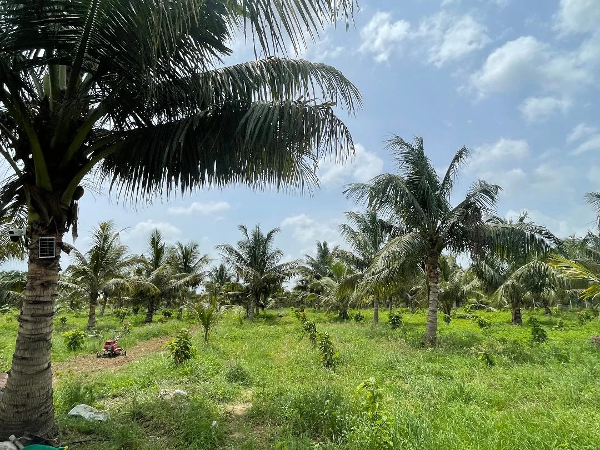
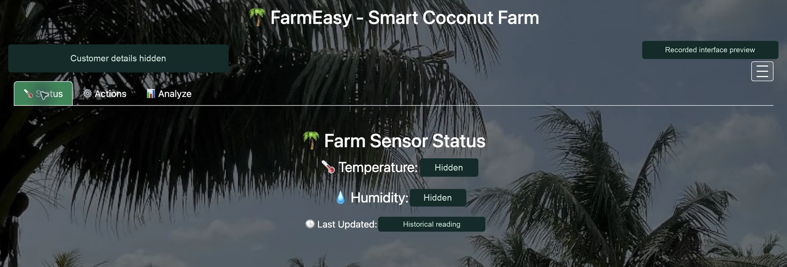

FarmEasy in practice
Field work.
On-screen visibility.
A closer look at our hardware, sensor testing and monitoring interfaces across agricultural and industrial applications.
A 28-second overview
From field hardware to a useful view.
Real photos and recorded interfaces. Instrumental music and on-screen descriptions. Press Play to watch here.
Read the video description
The video moves from a coconut farm and radar level sensor to a field test setup, then shows a tank monitoring dashboard. It closes with agricultural monitoring hardware, a farm status interface, and FarmEasy contact details. Dashboard customer names are omitted; recorded readings are retained. The farm view is a historical snapshot.
01 / Industrial tank monitoring
Connect the instrument to the interface.
Radar sensing, RS485 integration and remote visibility for an oil-factory tank monitoring project.

Start with the measurement.
Our field work includes checking the sensor, verifying communications and testing how readings reach the monitoring application.
These photos show sensor preparation and testing for our one-tank monitoring project.
- Radar level sensing
- RS485 / Modbus communication
- Sensor diagnostics and integration


Industrial dashboard
A clear view of tank conditions.
The interface brings together liquid level, calculated quantity, fill percentage, sensor status and reading history. Operators can select a time window and switch between displayed units.
WhatsApp threshold alerts link back to the dashboard. PDF tank reports summarize opening and closing stock, with recorded liquid-level and quantity trends.


02 / Agriculture IoT
Stay connected to farm conditions.
Field hardware and remote monitoring designed around agricultural work.

Built around the farm.
Our agricultural work brings together field sensors, solar-powered telemetry and remote irrigation control.
The farm application includes temperature and humidity status, a separate motor-control view and sensor analysis tools. WhatsApp messages confirm borewell motor ON and OFF actions.
- Field measurements at a glance
- Remote motor-control interface
- Solar and battery-powered monitoring
Agriculture dashboard
Readings in a familiar place.
The status view presents temperature, humidity and the last reading time alongside navigation to controls and analysis.


Let’s start with your site
What do you need to monitor?
Tell us about your farm, tank, equipment or process.